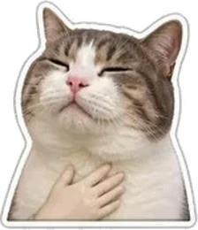
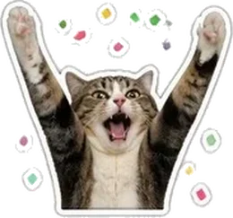
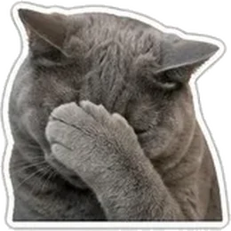
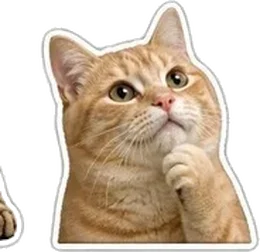
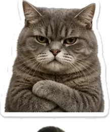
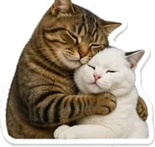
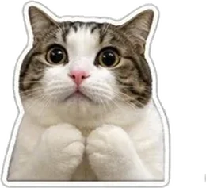
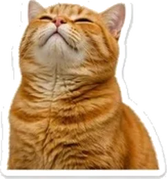
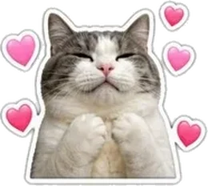
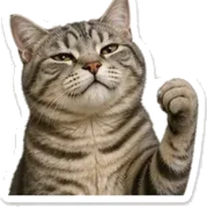

page two of two
You survived it. Here's the stupid half.
music's still here, if you want it
there is no wrong one. that's sort of the entire point.
Okay. Noted. Nothing needed.
No follow-up question. No "you okay??" sent three times. No weird energy about it tomorrow.
I'll be over here doing my own thing, badly. Come back whenever — or don't, today. Both are completely fine, and neither one costs you anything.

Oh. Okay. Cool. Cool cool cool.
(closes forty tabs, sits up straight, pretends to have been doing something productive)
Go ahead. I have nowhere to be and nothing better to do — which is genuinely a bit sad for me and extremely convenient for you.

they're not going anywhere. they'll still be here at 3am.
You're not too much. I just have a very small brain and you use the entire thing.
That's a me problem. I'm handling it. Badly — but I'm handling it.

I rewrote the first line of the other page fourteen times. Fourteen. There is a folder.
One of the early drafts used the word "moonlight." Unprompted. I've deleted it, but I don't think I'll ever really be free of it.
Text me.
Worst case I'm asleep and you get a reply at 7am that just says "WHAT. HELLO." Best case I'm also awake, being obsessive about some project that refuses to work.
Either way, you're not bothering anybody.

Completely valid. Go ahead.
I'll wait — waiting is my only real athletic ability. And you don't have to be polite about it either. I'd genuinely rather know than be left to guess.

You don't have to explain it. You can just send a full stop.
I'll take a full stop. I'll send one back. We can sit there like two idiots exchanging punctuation until you feel like using actual words again.
Because somewhere in everything you told me, you mentioned that you'd gotten used to keeping things to yourself.
And I thought: I would really, really like to be inconvenient to that habit.

You explained yourself to me when going quiet would have been so much easier.
That is not the behaviour of someone nobody can handle. That's just bravery with terrible PR.

Honestly? The most likely reason, and I respect it.
Screenshot whatever you want. Send it to whoever you want. I've made my peace with it.


anyway —
If you ever catch yourself smiling at your phone for no reason,
that's not a glitch.
That's just me, somewhere, being extremely normal about you.
(you're allowed to screenshot this and make fun of me.
that's fine. that's included in the price.)

← back to the serious one if you want to read it again. or don't.still no reply needed.
still meant every word of it.